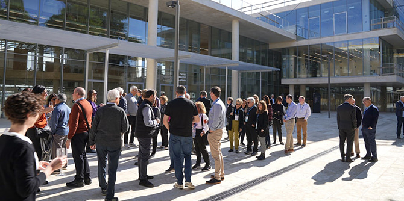
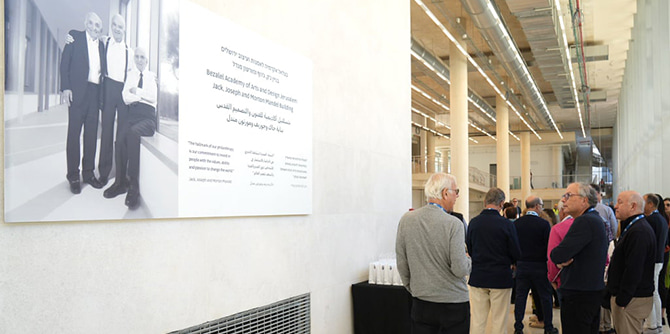

Exterior view of the Mandel Campus and Building (Photo: Simanim)
The new Jack, Joseph and Morton Mandel Campus and Building of the Bezalel Academy of Arts and Design Jerusalem was inaugurated on November 10, 2022. The Mandel Foundation is the lead donor for the new campus, which reflects the Foundation's commitment to promoting the arts and institutions of higher learning in Israel, as well as its commitment to the city of Jerusalem.
Located in the heart of the city, next to the Russian Compound, Bezalel's new campus will serve 2,500 students and 500 faculty members in a state-of-the-art facility. Bezalel’s move from its Mount Scopus campus, which is somewhat removed from the city center, is expected to transform downtown Jerusalem and make it a hub of student life, and to reinforce Israel’s capital as a national and international center for culture and creativity.
Designed by the renowned SANAA Architects from Japan, the 400,000-square-foot building will house workshops, classrooms, galleries, studios, offices, auditoriums, a library, and a cafeteria. The building's transparent design is a central architectural feature reflecting Bezalel's new pedagogical approaches and its aspiration to play an active, meaningful role in the life of the city it has called home since 1906. This transparency creates lines of sight that are unimpeded throughout the building and from the building to the surrounding streets, encouraging unprecedented academic collaborations and interdisciplinary activities as well as interactions between Bezalel students and the city's inhabitants. The building invites the Jerusalem community to take a look inside, visit its galleries and library, attend conferences and events, and become a part of Bezalel's day-to-day life.
 Interior view of the Mandel Campus and Building (Photo: Simanim)
Interior view of the Mandel Campus and Building (Photo: Simanim)
The inauguration ceremony was attended by a number of dignitaries, including President Isaac Herzog and his wife First Lady Michal Herzog, Jerusalem Mayor Moshe Lion, Bezalel President Professor Adi Stern, Bezalel's Chairman of the Board Dan Meridor, Japanese Ambassador Mr. Koichi Aiboshi, two representatives of the Russian Orthodox Church and Mandel Foundation President and CEO Professor Jehuda Reinharz and Mandel Foundation Chairman of the Board Steve Hoffman.
“We expect that here, in the city center of Jerusalem, we will have a vibrant urban campus whose design echoes the blurring of boundaries between internal and external, between old and new, and between art and city life,” said Professor Jehuda Reinharz in his address to those gathered. “We at the Mandel Foundation are proud to make such a transformative contribution to the city and to art, and thereby to be part of this movement toward the future – the future of Jerusalem, and the future of Israeli art."
The new Jack, Joseph and Morton Mandel Campus will enable Israel's oldest Academy to continue to shape the future of art, design and architecture in Israel, the region and abroad. Two departments will move to the new building in January 2023, and the rest of the departments are expected to move in by early March.

A plaque with a photo of the Mandel brothers in the new building (Photo: Simanim)
To read the full text of the speech given by Professor Jehuda Reinharz, click here >>
Find out more about the new Mandel Bezalel complex here >>
{kind=link}
{kind=link}